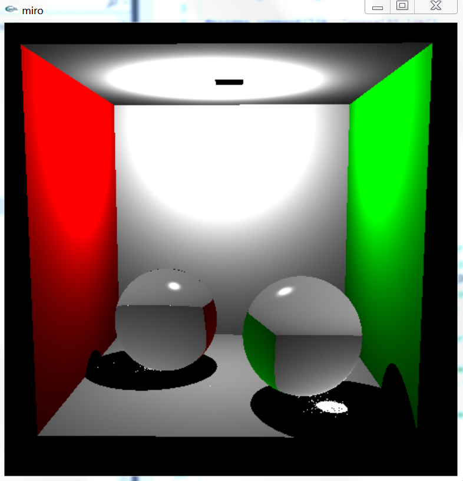
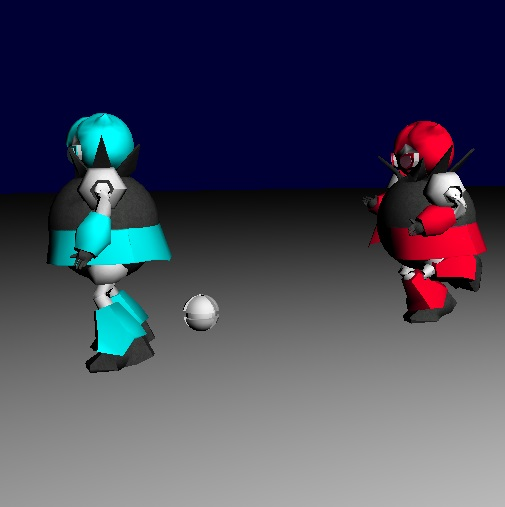

Just type the HTML and it will be shown below.
Our original proposal of the project was a simple scene that compliments photon mapping, such as using the cornell box as the rendered scene. In addition to the photon mapping, having caustics would make the scene look more realistic.
[Brian] For this project I was more focused on creating a nice scene that we can use to demonstrate our features, a scene other than the ones that are given to us from the class website. Originally, I wanted to reuse a model of a monster that I had used for CSE 167. This required implementing texture mapping using the Miro base code. Unlike relying on OpenGL function calls that I used for my CSE 167 project, I had to create my own structures and functions for storing/using the texture images. This is because objects that have textures will be using those texture color as their diffuse component. And so, after successfully importing a model with its texture images, we have this:

After seeing the result, I felt the scene felt lacking - there's not much going on. Since I am taking CSE 125 this quarter and my CSE 125 team recently finished our game, I was thinking of taking those models used in the game and recreate a scene from it, as if it was a "screenshot." As shown here, we have a (red) player throwing a bomb at another (blue) player (Note: only the robot models have textures):
